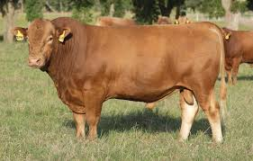
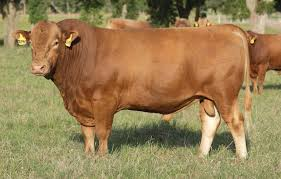

We aim to meet the growing demand for beef in Rwanda while maintaining responsible farming practices.


Modernized Farming & Cattle Business was established with the aim of transforming the agricultural landscape in Rwanda.
Our mission is to provide innovative and sustainable farming solutions for local farmers, focusing on cattle management and farm operations.
Through the integration of technology and advanced farming practices, we have made significant strides in improving both dairy and beef cattle farming in Rwanda.
From humble beginnings, our business has grown steadily over the years, driven by a strong commitment to supporting local communities and fostering economic growth.
We specialize in offering farmers state-of-the-art technologies, training programs, and resources to help them maximize their productivity and sustainability.
With the support of our dedicated team and local experts, we have been able to drive the development of cattle farming in Rwanda, ensuring a prosperous future for both our farmers and the industry as a whole.
Our company focuses on three key areas that have contributed to our success and growth:
We prioritize the health and productivity of our dairy cattle by utilizing modern milking techniques and advanced nutritional plans.
This ensures high-quality milk production and supports the dairy sector in Rwanda.
Our beef cattle are raised with a focus on proper breeding, feeding, and overall care to ensure the highest-quality beef.
We aim to meet the growing demand for beef in Rwanda while maintaining responsible farming practices.

Effective farm management is the foundation of our business.
We implement innovative techniques that improve the efficiency of farming operations, from water management to soil health.
This allows us to provide local farmers with the tools they need to succeed in an increasingly competitive market.


We believe in showcasing the progress we’ve made and the positive impact we’ve had on the agricultural community in Rwanda.
Watch the video below to get a glimpse of our journey and the future we are building: